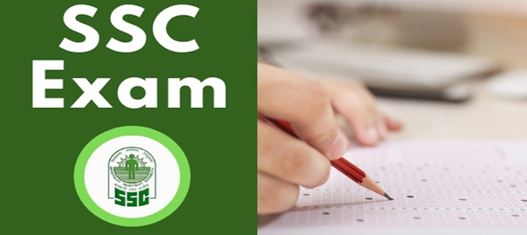
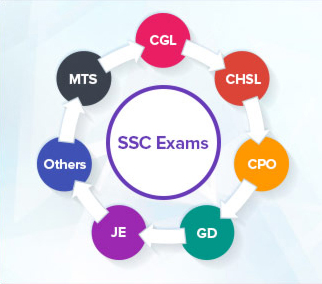
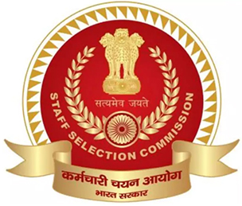

How to Clear SSC Exams
Posted by:
Admin | 23 Apr 2024

In education, an examination just tests to show the knowledge and ability of a student, and it is not the scorecard of a person's personality. But it is necessary to take examinations for a cross-check whether our learning is going in the right direction or not. So, in this article, I will be putting light on the examination which is held nation-wide, SSC (Staff Selection Commission) exams. Around 10 lakhs of candidates appear each year for various SSC exams.
Purpose of Exam
The purpose of this SSC Exam is for the recruitment of staff at various designations for the Government of India. It is conducted under different categories like:
Now let us understand what these terms are.

- SSC-CGL: Through this Exam, the posts recruited are Assistant Audit Officer, Assistant Accounts Officer, Assistant Section Officer, Inspector of Income Tax, Assistant Superintendent, Divisional Accountant, Junior Statistical Officer, Auditor, Tax Assistant, Upper Divisions Clerk, etc.
- SSC-CHCL: Through this Exam, the posts recruited are Lower Divisional Clerk (LDC), Junior Secretariat Assistant (JSA), Postal Assistant (PA), Sorting Assistant (SA), Data Entry Operator (DEO) and DEO (Grade A).
- SSC-MTS: Through this Exam, the posts recruited are Multi-tasking staff.
- SSC-CPO: Through this Exam, the posts recruited are Sub-Inspector and Assistant Sub-Inspector.
There are 4 papers:
Paper 1:
- Quantitative Aptitude Syllabus
- General Intelligence and Reasoning Syllabus
- English
Paper 2:
- Quantitative Abilities
- English Language and Comprehension
- Statistics
Paper 3:
- Descriptive Exam for testing Hindi and English Writing skills
Paper 4:
- Data Entry Speed Test
- Computer Proficiency Test
Other exams for certain posts are:
- Personality Test
- Physical Endurance Test

- General Intelligence & Reasoning: It would include questions of both verbal and non-verbal type. Problems in this component will be aimed at testing the candidates' general awareness of the environment around him and its application to society.
- Quantitative Aptitude: The questions will be designed to test the ability of appropriate use of numbers and number sense of the candidate.
- English Comprehension: Candidates' ability to understand correct English, his/ her basic comprehension and writing ability, etc. would be tested.
- Statistics: The paper would include topics such as Collection, Classification and Presentation of Statistical Data, Measures of Central Tendency, Measures of Dispersion-, Moments, Skewness and Kurtosis, Correlation and Regression, Probability Theory, Random Variable and Probability Distributions, Sampling Theory, Statistical Inference, Analysis of Variance, Time Series Analysis, and Index Numbers.
- General Studies - Finance and Economics:
- Finance & Accounts - This would include questions on fundamental principles and basic concept of accounting.
- Economics & Governance - The paper would consist of topics such as Comptroller & Auditor General of India- Constitutional provisions, Role and responsibility, Finance Commission-Role and functions, Basic Concept of Economics and introduction to Micro Economics, Theory of Demand and Supply, Theory of Production and cost, Forms of Market and price determination in different markets, Indian Economy, Economic Reforms in India, Money and Banking, and Role of Information Technology in Governance.
- a citizen of India,
- or Nepal,
- or Bhutan,
- or Tibetan refugee
- or a person of Indian origin who has migrated from Pakistan, Burma,
- The age limit of SSC for various posts is within 18 years to 32 years.
After knowing the syllabus, the vital thing that comes to mind is how to strategize our studies.
- Have proper planning for the whole day and divide the time into different sections where you can devote time to all the sections equally.
- There should be an adequate timetable which should be followed religiously.
- You should know your weak and strong points do that you can devote time accordingly.
- Make the best use of all the available online resources.
- Be updated with all the general knowledge. Do maintain notes if the events that are happening worldwide. And keep an eye on the economy too. This not only increases our awareness but also helps us in enhancing our verbal skills too.
- Download previous years question papers because nothing can be much more beneficial than them.
- Do make short notes of the content which you have read to have a perfect last-minute revision.
- To enrol in a test series that will help in keeping pace with time.
So, keep practising, and then nothing can stop you!!